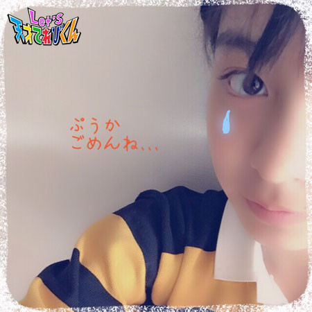

<<2015年4月 | トップページ | 2015年6月>>
2015年5月
○○県が気になる［小西憧弥］
こんにちは！憧弥です！
ゴールデンウィークは、みんな楽しかったですか？
憧弥は三重県から来てくれた友達家族と遊べたのが
一番楽しかったです！
BBQしたり、自然いっぱいのとこで遊んだり、
江ノ島に行ってイカの丸焼きを食べたり、銭湯に行ったり、
お家でみんなでお泊まりしたり、最高でした(^_^)v
さて、本題は「 ◯◯県が気になる 」です！
僕は、おじいちゃんおばあちゃんが住んでる奈良県が気になります！
どうしてかというと、最近社会の授業で古墳を習ってすごく気になったから、
いっぱい古墳がある奈良県に行って、
いろんな形の古墳を見てみたいとおもったからです。
前方後円墳と前方後方墳、円墳と方墳を生で見てみたーい！
あと、シカがなぜあんなにいっぱいいるのかも知りたい！
それと、池原ダムに行って大きなブラックバスを釣りたい！
奈良県にはもう、どちゃもん探しに行ったけど、
きんしゃかを仲間にできなかったから、
もしかしたらまた行くチャンスはあるかも！
投稿者:小西憧弥 | 投稿時間:18時45分 | カテゴリ：てれび戦士 | 固定リンク
○○県が気になる［原田明莉］
★Hello★
明莉ですっ！
もうすぐ運動会があります(^^)
小学生最後の運動会なんですよー！
そして私は放送委員なので、
プログラムを読んだり、
徒競走で人の名前を呼んだりするなど、
がんばります！！！
では本題にはいりますっ(￣^￣)ゞ
今回のテーマは
「 ○○県が気になる 」
です！
私が気になる県は
沖縄県
です！！！
行きたい理由はたっくっさーーーんありますよー！
1回だけ、
私、沖縄に行ったことがあるんですよ！
まず、海がめちゃくちゃきれい！！！
あの、透き通る海で思うぞんぶん体を動かしてはしゃいで楽しみたい！！
あとはやっぱね、
ご飯がおいしーーーーーーー！！！
食べて食べて食べて食べて食べて食べ続けたいですー！
そしてそして
沖縄県に行きたい、1番の理由は、
沖縄が空手発祥の地と言われているんです！！
沖縄に行って空手のいろんなことを知りたいです！！！(^O^)／
みなさんの行ってみたい県はー？
投稿者:原田明莉 | 投稿時間:18時54分 | カテゴリ：てれび戦士 | 固定リンク
○○県が気になる［小澤竜心］
こんにちは！竜心です。
最近、ぼくはバッティングセンターによく行きます。
まだまだたくさん空振りをするけれど、
この前、なんと！！！！
ホームランの的に当たったんです～ ＼(◎o◎)／
ホームランカードをもらいました！
うれしかったなぁ～♪ ヽ(´▽｀)/
これからもいっぱい打てるように、がんばります！！
では、『 ぼくの気になる県 』のお話です。
ぼくは、昔の芝居小屋に行ってみたいので、
【 芝居小屋のある県 】が気になります (*^▽^*)
『 秋田県 』の【 康楽館 】
明治時代の建物なのに、洋風のお城みたいなんです。
和風と洋風が一緒になった不思議な感じ・・・。
すっごく、きれいなんですよー (#^.^#)
『 兵庫県 』の【 永楽館 】
近畿地方で一番古い芝居小屋です。
客席のかべに、昔の看板がたくさんならんでて、
しぶくてかっこいいんです♪
「 姫路城 」も行ってみたいです！！
『 香川県 』の【 旧金毘羅大芝居・金丸座 】
なんと、日本最古の芝居小屋なんです (*^。^*)
自分で打った「 さぬきうどん 」を、食べてみたい！
『 熊本県 』の【 八千代座 】
天井いっぱいに色とりどりの昔の広告がはってあって、
とってもきれいなんです。
大好きな「 デコポン 」も、食べたいなー (^w^)
調べたら、見学できる芝居小屋もありました！！
きっと、昔の役者さんのパワーを、たくさん感じることができると思います。
歌舞伎の公演もやっているので、
いつか、客席からもみてみたいです Ｏ(≧∇≦)Ｏ
投稿者:小澤竜心 | 投稿時間:18時45分 | カテゴリ：てれび戦士 | 固定リンク
○○県が気になる［赤崎月香］
こんにちは ヽ(^▽^@)ノ
赤崎月香です。
 母の日にプレゼントを買おうと思ったら、
母の日にプレゼントを買おうと思ったら、
おこづかいが300円しか残っていません Σ(- -ノ)ノ
ピンチ！！ ピンチ！！ 大ピンチです！！ (-_-;)
ここは感謝の気持ちを伝えて・・・
にっこり笑ってごまかそう・・・
わあっ！！！！！
妹がお花をプレゼント！！
ますますピンチです！！ Σ(=∇=ノノ
ど・・・ どうしよう・・・
☆。・:*:・°★,。・:*:・°☆
『 ○○県(都道府)が気になる 』です。
私は、山口県出身なので、山口県が好きです。
えへへ(*^-^)
山口県以外だと・・・
東京より東に行ったことがないので、
東北地方や北陸地方が気になります♪
ざっくりし過ぎですか？ (^^;;
ズバリ！！！ 山形県！！！
小学校の運動会のとき、花笠音頭を踊ったことがあります。
本当の花笠音頭を見てみたい♪
それと、おいしいさくらんぼが食べたいな♪
まだあります！！ (￣‥￣)=3
ズバリ！！！ 沖縄県！！！
沖縄県にしかいない、動物や植物を探す探検をしてみたいです。
歴史も興味があります。
それと、カラフルなお魚を食べてみたい♪
最後に、広島県
広島県のみなさん、
ぷうかが大好きなみなさん、
ぷうかを助けられなくて
ごめんなさい( p_q)
私は、どちゃもんの中で、
1番ぷうかが好きです！！
まだあきらめていないので、
いつかぷうかを助けたいと思います！！

☆。・:*:・°★,。・:*:・°☆
全国のみなさんから、
たくさんのお手紙をいただきます。
都道府県の良いところが
いっぱい書いてあります。
全部行ってみたいな♪って、思います！－＝≡ヘ(* - -)ノ
ありがとうございます。
またね～ヾ(*'-'*)
投稿者:赤崎月香 | 投稿時間:18時45分 | カテゴリ：てれび戦士 | 固定リンク
私だけの決まりごと［林武尊］
こんにちは林武尊です。
この前、竜心の歌舞伎をみに行ってきました！！

竜心の演技、すごくうまかったです。
そのあと、みんなでおみくじをひきました。
大吉じゃなかった～(O_O)
そしてみんなと遊んで帰るとき
カレンが疲れていたのか、もう爆睡(゜ロ゜)
竜心の歌舞伎はすごいし、みんなはおもしろいし
最高の1日でした（≧∇≦）
さて本題へ。
今回は僕の決まりごとです。
まず、緊張するときは必ず手に3回【 人 】を書いてのみこみます。
そうすると、不思議と少し緊張がほぐれるんです！
それと、もう1つ絶対にすることは、
横断歩道がどんなに遠くにあっても、そこを渡ることです。
なぜ横断歩道を歩くかというと、交通安全の意味もあるけど、
道としての役わりをはたしてあげたいから。
他には、
友達や先生の頼みごとはなるべく聞いてあげることです。
これからも今ある決まりごとを破らないように、
しっかり守っていきたいです(￣^￣)ゞ
投稿者:林武尊 | 投稿時間:18時45分 | カテゴリ：てれび戦士 | 固定リンク
私だけの決まりごと［齋藤茉日］
こんにちは～
茉日です(o^^o)
今回のテーマは
「 私だけの決まりごと 」です^ ^
私の決まりは・・・
ダンスのコンテストで緊張をほぐすために、
肩のちょっと下のところを左と右、叩きます！
それから、ひざのちょっと内側のところのツボ？のようなところを
同時に、力強く叩きます！
すると本番前に、
「 行ける！ 」って思って、本番思いっきり踊ることができます*\(^o^)/*
このあいだ出たコンテストのときも
舞台の袖でそのおまじないをしていどみました！！
このコンテストは優勝することができました*\(^o^)/*
おまじないのおかげで優勝できたのかな？
でも私だけの決まりごと、それぐらいしかありません(>_<)
ちなみにお母さんにどんな決まりごとがあるのか聞いてみたら、
こんなことを言われました^ ^
階段は必ず左足からのぼりおりして心で段数を数えるよ～。
・・・へぇー
洗濯物を干すときは等間隔で必ずきれいに干すよ～。
・・・すごーい
お母さんは決めごとたくさんあるけどねー。。。
、、、
私にはそんな決めごとないかも。。。
私の場合、決めごとを作っても忘れちゃうから（≧∇≦）
皆さんはどんな決まりごとがあるのでしょう^ ^
それでは！今回はこのへんで！
またね！
投稿者:齋藤茉日 | 投稿時間:18時45分 | カテゴリ：てれび戦士 | 固定リンク
私だけの決まりごと［辻村晃佑］
辻村晃佑です。
最近、本棚を整理しました。
いやー本棚を整理するとさっぱりして気持ちいいですね。
整理をしている途中、幼稚園のときに大好きだった絵本がでてきて、
その絵本を読んでたら、すごくなつかしいなーって思いました(*^^*)
さて、僕の決まりごとは2つあります！
まず1つめは、
よくありがちなことで「 ケーキの上に乗っているイチゴを最後に食べる 」
ということがあるみたいですけど、
僕の場合は、ケーキを半分くらい食べた頃、そのイチゴを半分食べます。
そしてケーキを食べ終わったあとに、残り半分のイチゴを食べます。
こうすることによって、途中、ケーキの味にあきることもありませんヽ(*´∀｀)ノ
やっぱりどんな食べものでも、途中で変化をつけた方が絶対おいしいと思います。
2つめは、毎朝必ずお茶を飲んでいることです！
意識していないけど、普段も水分をとるときはお茶を飲んでいます。
おいしいし健康によさそうなので一石二鳥ですね( ´∀｀)
皆さんは、どんな決まりごとがありますか？
出かけた先できれいなお花があったので写真を撮ってみましたヾ(*´∀｀*)ﾉ
投稿者:辻村晃佑 | 投稿時間:18時54分 | カテゴリ：てれび戦士 | 固定リンク
私だけの決まりごと［桐畑カレン］
こんにちは。
カレンです(*^^*)
ジャーン！！
このおとめちっくな入れもの、何だと思いますか？
答えは、
「 カレン専用うめぼし入れ 」
なんです。
1日1つぶ、うめぼしを食べています。
うめぼしには、体にいい成分がたくさん入っているそうです。
あまりくわしくは知らないけど、
殺きん作用、腸の働きをよくする、老化防止などだそうです(^-^)
それからもう1つ、毎日食べているものがあります。
それは、チョコレート！
お勉強の前に、あま～いチョコレートを
ちょっぴり（たくさんかも？！）と、カカオ100％のチョコレートを1個食べています。
あまいとうぶんは、頭の働きをよくするそうです。
おいしいチョコレートが食べられて、頭もよく働いてくれるって、いいですね♪
カカオ100％のチョコレートは想像できないくらい、にがいです(>_<)
にがいんだけど、くせになる味で、私は大好き(^^)
カカオはポリフェノールをたくさんふくんでいて、健康にいいそうですよ。
私、こうみえてけっこう「 健康 」に気をつけています(^∧^)
やっぱり元気が１番☆です＼(^o^)／
投稿者:桐畑カレン | 投稿時間:18時45分 | カテゴリ：てれび戦士 | 固定リンク
私だけの決まりごと［笹原尚季］
こんにちは♪ 笹原で～す(^^)
この前、暗算の大会があって
5年生の部で僕が優勝できて、
お兄ちゃんは中学2年生の部で優勝しました！
兄弟ダブルで優勝できてうれしかったです（≧∇≦）
また次も頑張ります♪
今回は、「 私だけの決まりごと 」。
特にないなぁって思ったけれど、ありました！
ドキドキしたりすごくきんちょうする場面で胸に手を当てる。
「 ドキドキしずまれ 」って上からおさえても止まらないんだけど、
何となくやってしまいます。
よくお母さんに、心臓に毛が生えてるんじゃないの？って言われますが、
僕は結構きんちょうする派です(>_<)
茶の間戦士のみんな～！
いつも一緒に戦ってくれてありがとう☆
異次元獣と戦うときとか、清掃課からどちゃもんを救い出すときは、
やっぱりすごくきんちょうします。
絶対成功させるぞって誓いを込めて、
あと落ち着くために胸に手を当てます。
どんなに頑張っても僕達だけでは戦うことはできません。
これからもみんなで一緒に頑張ろうね(^.^)
Let's！
投稿者:笹原尚季 | 投稿時間:18時45分 | カテゴリ：てれび戦士 | 固定リンク
私だけの決まりごと［原田明莉］
★Hello★
だーはらです。
こないだ、家族で山梨にいってきましたー！
ハンググライダーで空を飛んできましたー！
力を入れないで飛ぶってこんな気持ちいいんだーと思いました！
ほんと緑豊かで気持ちよかったです！❤
ではでは・・・
今回のテーマは
「 私だけの決まりごと 」
です！
不便な出来事からできた私の決まりごとですッ
それは・・・
うがいなどで、口をゆすぐときです！
『 ぺッ 』
とするときに
髪の毛を束ねてないと
髪の毛が前にきてしまい、
水がかかってしまいますヽ(´o｀；！
『 あぁ！ッ・・・・・・・・・。』
と、意外におちこみます。笑
そこで、
『 ペッ 』
と、やるとき、
水にかからない方法を見つけました！
★1秒でできる！
・・・期待はしないでください。
アィーーーーーーーン

こんな風にすると
髪の毛が水にぬれることがなくなります！！！ぃぇーぃ！
これいいな！
と思ってやり続けたら
口をゆすぐときにクセでいつもやっていました！
これが私の決まりごとです！！！
★Let's★

投稿者:原田明莉 | 投稿時間:18時45分 | カテゴリ：てれび戦士 | 固定リンク
私だけの決まりごと［小澤竜心］
こんにちは！竜心です。
この間、てれび戦士のみんなとお母さん達が、
歌舞伎をみにきてくれました！
みてもらえて、すっごくすっごくうれしかったです。
みなさん、ありがとうございました＼(^o^)／
そして、お気に入りの場所です。
出番の日はここで、警備員さんにごあいさつして、
「 今日もがんばってね！ 」と言っていただきました。
みなさんが優しくて、とても楽しかったです♪
ありがとうございました。
さて、ぼくだけの決まりごとは、
『 大事な日の前には、必ず頭をそる！ 』です。
運動会や、学芸会、少林寺拳法の大会や、
歌舞伎の初日や千穐楽（せんしゅうらく）などなど・・・
頭をそると気合いが入って、力がみなぎります(｀□´)」
ぼくは、3歳の頃から坊主です。
いつもお父さんが、お風呂場でそってくれます。
お父さんも一緒の坊主で、仲の良い親子です。
洗うのは、お父さんもぼくも、
リンスインシャンプーなんですよ～(*^▽^*)
坊主だと汗をかきにくいし、楽ちんです♪
なので、ぼくには坊主が一番なんですo(*⌒―⌒*)o
投稿者:小澤竜心 | 投稿時間:19時05分 | カテゴリ：てれび戦士 | 固定リンク
私だけの決まりごと［飯島緋梨］
こんにちは(^o^)
飯島緋梨です！
最近はすっかり暖かくなりましたね(^_^)
学校では運動会の練習も始まりました。
小学校最後の運動会なのではりきっています。
さて今回のお題は
『 私だけの決まりごと 』
空いているときは電車のはじっこに座る！
私はよく電車で知らぬ間に寝てしまいます。
ばくすいして隣の人に寄りかかってしまったことがあるので、
手すりのあるはじっこが空いていたら、必ず座ります。
でもはじっこは人気の場所なのでなかなか座れません。
はじっこに座れると、その日1日がラッキーな気がします(^_^)
眠くならない勉強机！
私は宿題を今までリビングでやっていました。
宿題をしていると、すぐにテレビが見たくなっちゃったり
眠くて眠くてたまらなくなってしまいます。
なのでこの前、気分を変えて
自分の勉強机で久しぶりに宿題をしてみました(^_^)
（実はあまり勉強机で勉強したことなかったの！）
すると！なぜか眠くならなかったのです。
いつも勉強しているリビングじゃなくて、
少し場所を変えてみると集中できるのかも？

宿題中に眠くならない方法があったら誰か教えてください～
バイバイ(*^_^*)
投稿者:飯島緋梨 | 投稿時間:18時54分 | カテゴリ：てれび戦士 | 固定リンク
私だけの決まりごと［小西憧弥］
こんにちは！憧弥です。
春の身体測定は、身長137.5㎝でした。
ちょっと伸びた～ ＼(^o^)／ やった！
この前、家族でキャンプに行きました。
天気予報は「 晴れ 」だったのに、夕方から雨が降ってきて、大変！
「 さすが憧弥！ 」って言われました。
なぜかというと、僕は雨男だからです。
でも次の日は晴れて、川でも遊べました。
楽しかったー（≧∇≦）
今回のお題は「 私だけの決まりごと 」。
僕は夜寝るとき、ベッドに寝転んだら壁の方を向いて寝ます。
壁の反対を向いて寝るとなぜか体がモゾモゾします。
壁の方を向いて寝ると安心できます！
自分でもなんでかわかりません・・・
あと家族の決まりごとで、ご飯を食べるとき、
家族の誰かが「 せーの！ 」って言って、みんなで「 いただきます 」って言います。
リズムも決まってます(^-^)
ご飯を食べる前にこれを言わないと、気持ち良く食べられません。
「 いただきます！ 」は、大切だよね！
投稿者:小西憧弥 | 投稿時間:18時45分 | カテゴリ：てれび戦士 | 固定リンク
私だけの決まりごと［杉本瑛］
みなさん、ジャンボ！（スワヒリ語のこんにちは！です）
「 私だけの決まりごと 」は
寝る前にお人形を枕元にきちんと並べることです。
でも、瑛の寝相がとてつもなく悪いから、
朝起きると並んでいなかったり、
あれ？この子は？ってなるときがあるんです☆～（ゝ。∂）
お人形を枕元に並べると安心して寝られるんです♡
1人で寝るときも、お母さんと寝るときも、
必ず一緒じゃないと落ち着かなくて( ´ ▽ ` )ﾉ
だから、旅先にもお人形を厳選して連れて行ってます。
並べるときには1番お気に入りのみるくくんを手前にして、そこから順に並べています。
みるくくんは2歳の頃からずぅぅっと一緒にいるから、もう家族なんです！
みるくくん大好きー（≧∇≦）
投稿者:杉本瑛 | 投稿時間:18時45分 | カテゴリ：てれび戦士 | 固定リンク
私だけの決まりごと［瀧澤翼］
花粉症もやっと落ち着き、絶好調～！！の瀧澤翼です＼(^o^)／
週末に愛犬ポッキーと散歩をしてるとき、
何気なく写真を撮ったらある発見をしたんです！！
見てください！！
この超～ふてくされてる顔！！
散歩に行く前は「 連れてって！！ 」と、ワンワン吠えてたのに・・・。
それに最近、僕によく冷たい視線を送るので嫌われちゃったかなぁ～？
まぁ可愛いから許す！！（笑）
さぁ今回のテーマは『 私だけの決まりごと 』ですね。
僕は必ず休日にポッキーの散歩に行きます。
これが僕だけの決まりごとです ! (^^) !
平日は学校へ行くので休日はまったり散歩に行きます。
それと自然の中でポッキーと散歩していると、なぜか安心しちゃうんです。
地元をはなれてるときに犬と散歩している人を見かけると
ポッキーの散歩を思い出して安心感が湧いてきます。
今回はポッキーがメインになっちゃいました。
それでは、Let's！！ ワン！！
投稿者:瀧澤翼 | 投稿時間:18時45分 | カテゴリ：てれび戦士 | 固定リンク
私だけの決まりごと［赤崎月香］
こんにちは ヽ(^▽^@)ノ
赤崎月香です。
宝塚風に撮ってみました～♪
なかなか男前でしょ？ヽ(´▽｀)/へへっ
☆。・:*:・°★,。・:*:・°☆
あっ！！！ 本題を忘れてた！！！ Σ('0'*)
『 私だけの決まりごと 』
ある！ある！ある！
たくさんあります！！
☆ テスト前に、私より成績の良いお友達と
シャーペンのキャップを交換する♪
難しい問題でも解けそうな気がします(￣‥￣)=3
遊びで始めたことだけど、
今ではテスト前の習慣みたいになっています。
☆ マラソン大会は、魔法のくつ下をはく♪
小学生のころ、マラソン大会は必ず
このくつ下をはいて走りました。
練習では2位や3位なんだけど、
このくつ下をはいて本番を走ると、
1位になる魔法のくつ下！！！
このくつ下は、1年生のときに買ってもらいました。
たまたまマラソン大会の日にはいて行くと
良い結果が出たので、
毎年はいて出場することにしたんです。
きつくなって、小さくなってもはきました。
穴が開いたときは、お母さんに縫ってもらいました。
でも・・・
6年生の最後のマラソン大会は、
足首のはく離骨折が治らなくて・・・(ノ◇≦。)
途中から走れなくなりました。
途中で止めるのは悔しいので、
ゴールまで絶対に行こうと思いました。
お母さん方や、先生、お友達、
みんなが応援してくれました。
ゴールしたとき、みんなが迎えてくれました。
結果はビリだったけど、
あとから1位！！！！！ってことで～ ＼(*T▽T*)／ワーイ♪
魔法のくつ下は、本当に魔法でした。
中学校は、マラソン大会がないので、
このくつ下をはく機会はないけど、
これからも大切にしまっておきます。
またね～ヾ(*'-'*)
投稿者:赤崎月香 | 投稿時間:18時45分 | カテゴリ：てれび戦士 | 固定リンク
会ってみたい！［林武尊］
こんにちは、林武尊です。
急ですが…まだ全然春らしいことをしてません。笑笑
あ～あ、なんかお花見とかしたいなー。桜散っちゃったけど…
全然春を満喫してません(´；ω；`)
だから、春らしいこと絶対できるようにがんばります！
そして、これ見てください！
けん玉を教えてくれた秋元さんに、
検定をしてもらって、一級合格しました！
めっちゃうれしい（≧∇≦
次は、準初段を目指してがんばるぞ！
さて本題へ。
今回は、【 会ってみたい！】 です。
僕が会いたい人は、
マイケルジャクソン、錦織圭選手、ひいじいちゃん
と、ほかにもいろいろな人です。
今、実在する人もいれば、実在しない人もいます。
もう亡くなっていて、会うことはできないけど、
中でも1番会いたい人は、ひいじいちゃんです。
お母さんの話によると、
ひいじいちゃんの名前にも武という字かあって、僕と1字違い。
しかも、僕の名前は 「 武を尊敬する 」
だから、ひいじいちゃんを尊敬するっていう意味もあるんです。
ひいじいちゃんは、ぼくのお母さんが生まれた田舎で市長をしていたそうです。
田舎に帰ると、ひいじいちゃんが市長をしていたときにできた
学校や観光できる鍾乳洞の話などを
ときどき、お母さんから教えてもらいます。
すごーい！
そんなひいじいちゃんに会って聞きたいことは…
子供や孫をもつということは、どういう気持ちなのかとか、
市長の仕事はどういうことをするのかとか、いろいろなことが聞きたいです。
会うことはかなわない夢だけど、
これからもずっとひいじいちゃんを尊敬して、
立派な人になりたいです！
投稿者:林武尊 | 投稿時間:18時54分 | カテゴリ：てれび戦士 | 固定リンク
会ってみたい！［齋藤茉日］
こんにちわ～
茉日です (o^^o)
今回のテーマは、 『 会ってみたい！』 です (o^^o)
私は、いろんな女優さんに会ってみたいです^ ^
武井咲さん 上戸彩さん 戸田恵梨香さん 新垣結衣さん 堀北真希さん
桐谷美玲さん 菜々緒さん 満島ひかりさん 沢尻エリカさん 有村架純さん
…と言っていったら、きりがありません >_<
どの方にも会いたいのですが、
今回はその中で、【 桐谷美玲さん 】 と 【 菜々緒さん 】 の
ものまねメイクをやってみました ( ´ ▽ ` )ﾉ
【 桐谷美玲さん 】 ( ´ ▽ ` )ﾉ
ちょっと茉日感があるかな (･_･;
だいぶ茉日感があるな (･_･; 笑
こんな感じの写真があったので、それをまねしました♪
桐谷美玲さんは、
いろんな役をやっていて、しかも顔がきれいで…
私の憧れの人の1人です *\(^o^)/*
そして、【 菜々緒さん 】
こっちも茉日感があるかな？笑
これも写真を参考にさせてもらいました >_< 笑
菜々緒さんも顔がとってもきれいですよね (o^^o)
私は、菜々緒さんの悪役が大好きです *\(^o^)/*
私もあんなかっこいい悪役を演じてみたいです (o^^o)
菜々緒さんも、私の憧れの人の中の1人です *\(^o^)/*
本当に会えたらいいな♪
一緒に共演するなんて、
「 夢のまた夢 」 って感じですけど、
実現できるようにがんばろう♪
それでは、今回はこのへんで！
またね♪
投稿者:齋藤茉日 | 投稿時間:18時45分 | カテゴリ：てれび戦士 | 固定リンク
会ってみたい！［笹原尚季］
今回のお題は、 「 会ってみたい！」 です。
僕が会いたい人はたくさんいますが、
その中でも絶対に会いたい人…。
1人目は、『 ひいおじいちゃん 』 です。
ひいおじいちゃんは、僕がうまれる前に亡くなってしまったけど、
どんな人だったかは、お母さんからよく話を聞いています。
ひいおじいちゃんは、
頭がよくてせいぎかんの強い人で、
飛行機をそうじゅうしたことがあるし、
スキーや柔道・剣道などスポーツ万能。
元警察官で勲章を授与されたこともあるそうです。
いつも話を聞くたびに、すごい人だなぁって、あこがれが強くなります。
もし、ひいおじいちゃんに会えるなら、僕はとにかくお話がしたいです。
2人目は、『 忍者 』 です。
なぜならこの前、瑛ちゃんとしゅりけんを投げたから(^^)
単純かな？
投稿者:笹原尚季 | 投稿時間:18時45分 | カテゴリ：てれび戦士 | 固定リンク
会ってみたい！［桐畑カレン］
こんにちは。
カレンです(*^^*)
最近、少しずつ写真をとることにもなれてきて、
目を開けられるようになってきました！
みんなと写真をとるときに半目が多かったから、
「 いつもなんか半目のかれんちゃん 」 だったんです(^^;)
だから目が開けられるようになって、うれしいです(^^)
そんな私が 『 会ってみたい人 』
それは…
☆セーラームーンの月野うさぎちゃん☆
大大大好きなんです！
実はですね、
セーラームーンのうさぎちゃんとは、共通点があるんですよ。
① 同じ戦士である ( うさぎちゃんは美少女戦士、私はてれび戦士 )
② 髪型がツインテール
③ おっちょこちょいな性格
④ 平日の早起きが苦手
⑤ こまかいことは、気にしない♪
というところです。
セーラームーンの世界に入って、一緒に
「 月にかわっておしおきよ！」
と決めてみたいなあ。
うさぎちゃんには、
「 レーッツ！！」
って、してほしいです(*^o^)／
あっ、2つを合わせて
「 レーッツ！！月にかわっておしおきよ！」
がいいかな♪
そして、次に 『 会ってみたい人 』
それは…
10歳の子どもだったころの私のお父さんとお母さんに会いたいです。
特にお母さんは、いつも
「 ママが小学生のときは、〇〇だった 」
と、しっかり者だったアピールをしてきます。
でも、あ･や･し･い･と思っています(￣^￣)
だって、お母さんはかなりの 「 うっかり屋さん 」 だからです。
この前も、月香ちゃんと武尊くんとおしゃべりしていて、
「 桐畑家は、どうなってるの～www 」
と、笑われたばかりです(^^)
だから、本当にしっかり者だったのかを
確かめてみたいなあと思います(^-^)/
もしちがったら、
そのときは反げきにでま～す(^o^)/
投稿者:桐畑カレン | 投稿時間:18時45分 | カテゴリ：てれび戦士 | 固定リンク
会ってみたい！［辻村晃佑］
こんにちは！辻村晃佑です。
最近、ちょっとすごい奇跡がおこったんですよ！
組が2組で番号が22番でした！！
察しがいい方は、もう気付いていると思いますが、2年2組22番でした。
すごくないですか！！
2のゾロ目だーーー！！
今年は、なんだかいい年になりそうだなーヽ(´▽｀)/
さて、ぼくが 【 会ってみたい！】 のは…、 ≪ 子熊 ≫ です(*´ω｀*)
ヌイグルミジャナイヨ ホンモノダヨ
いやー、1度でいいから子熊とたわむれてみたいんですよー。
でも、たわむれるとめちゃひっかかれそうだなー(>_<)
子熊でも、すごく痛そう…
いや…だけど、すごくかわいいからな～。
う～ん…
やっぱり、会ってたわむれたいなー。
あと、もうひとつ。
戦国時代の武将は、本当はどんな人だったのか会ってみたいなー。
たとえば、織田信長は教科書に書いてある通りの人だったんだろうか。
もしも本能寺の変を知らせることができたら、どうなるのかな？
日本史がすごく変わってるかもしれないな。
あーでも、織田信長に近付こうとしたら、
「 何やつ！」 と言われて、家臣に討ちとられちゃうかもなー。
みんなも会ってみたい人や動物はいますか？
投稿者:辻村晃佑 | 投稿時間:18時45分 | カテゴリ：てれび戦士 | 固定リンク
ページの一番上へ▲